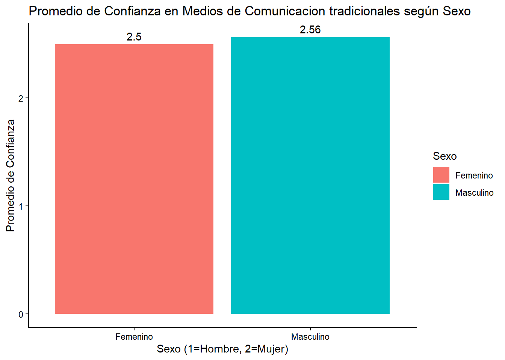
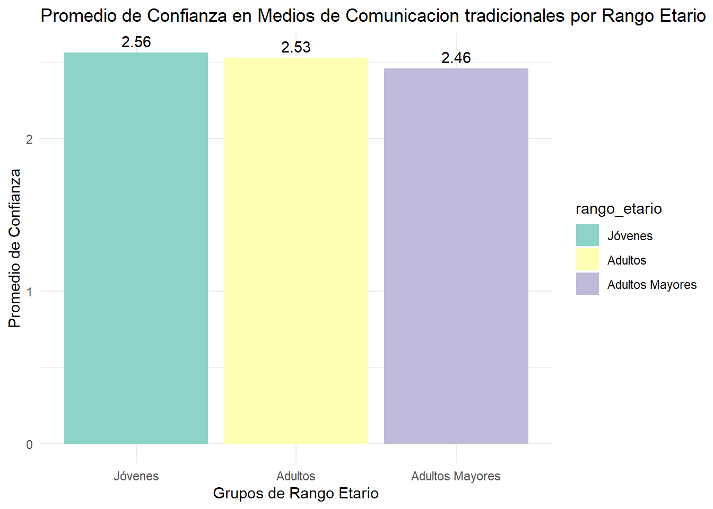
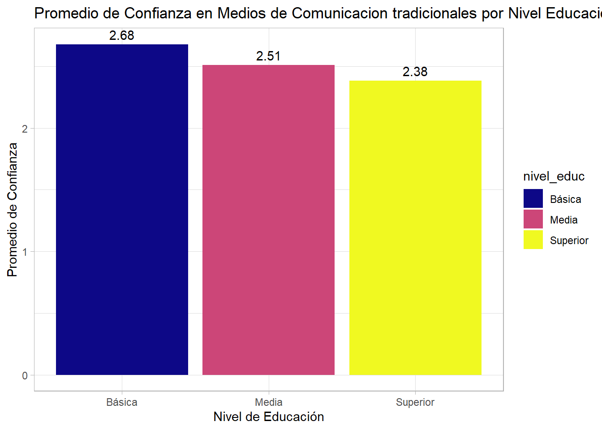

#1. Cargamos los paquetes a utilizar.-
library(pacman)
p_load(tidyverse, haven, dplyr, car)
#2. Cargamos la base de datos a utilizar.-
base_elsoc <- read_dta("C:/Users/belen/OneDrive/Documentos/GitHub/confianza-medios-edad-educacion/Input/ELSOC_Long_2016_2023.dta")
#2.1 Elegimos la ola 6, que corresponde a la del 2022.-
elsoc2022 <- base_elsoc %>%
filter(ola == 6)
view(elsoc2022)Determinantes generacionales y educativos de la confianza en medios tradicionales en Chile.
Introducción
La masificación de los medios de comunicación dió paso a una sociedad más globalizada e interconectada partiendo desde la imprenta, periódicos, radios, televisión hasta llegar hoy en día a una era de redes sociales. Estos distintos medios desempeñan un rol clave en la representación de la realidad y por lo tanto en la comprensión que las personas tienen de la misma (Friderichsen et al. 2022)
La confianza se entiende como un elemento que configura el vínculo entre la ciudadanía y los medios de comunicación, influyendo en el consumo informativo y entendimiento de la realidad de las personas (Serrano-Puche 2017). Actualmente se está viviendo una crisis de esta confianza, y también de credibilidad, en los medios a nivel mundial, la cual en Chile se ha manifestado con más fuerza, según (Friderichsen et al. 2022), luego del llamado “estallido social” del 2019 en donde fueron muy presentes las consignas tales como “La prensa miente” o “Apaga la tele”.
Sin embargo, los autores hacen hincapié en que este cambio de percepción y valoración a afectado sobretodo a los medios de comunicación tradicionales o editoriales, definidos como “Aquellos que producen y difunden contenidos siguiendo patrones estandarizados, sean de tipo institucional, ético-profesional o incluso comercial” (Friderichsen et al. 2022), por ejemplo los diarios, radioemisoras o canales de televisión.
Los autores aparte de entender la concentración de propiedad de los medios, relaciones de dependencia con otras industrias que financian y una homogeneización de contenidos como factores importantes que favorecen a la creencia de que los medios de comunicación editoriales son controlados externamente, consideran importante destacar el surgimiento de nuevos medios sociales de comunicación (redes sociales como Instagram o TikTok), popularmente usadas por las nuevas generaciones, las cuales “post-estallido social” fueron validadas como espacios de debate y comunicación de la ciudadanía.
En el escenario actual del país la relación entre la ciudadanía y los medios de comunicación ha dejado de ser monolítica. Mientras que para las generaciones mayores la televisión y la radio han funcionado históricamente como los principales en garantizar la realidad nacional, las generaciones más jóvenes han desplazado su atención hacia medios digitales caracterizados por la inmediatez. A partir de esta brecha generacional planteamos la siguiente pregunta de investigación: ¿En qué medida influye la brecha generacional y el nivel educacional en la configuración de la confianza hacia los medios tradicionales en Chile y hasta que punto esta valoración es diferente para Hombres y Mujeres?
Nuestra hipótesis central es que tanto la edad como el nivel educacional de la persona va a influir en el nivel de confianza que tiene hacia los medios de comunicación tradicionales.
Desde nuestro punto de vista buscamos ir más allá de la simple idea de que la gente solo “ve tele” o “escucha radio”. La importancia de este problema se encuentra en entender cómo ese consumo de medios impacta en nuestra convivencia y confianza. Para profundizar en esta investigación (Espinoza-Bianchini 2023) expone que en la literatura existen dos posturas contrarias: por un lado hay autores que piensan que los medios llegan a dañar la confianza porque manipulan la información; por otro lado, hay quienes creen lo contrario. En nuestra investigación analizaremos el rol de los medios como un “filtro”, ya que estos no nos imponen qué pensar, pero sí nos dicen cuáles son los temas importantes (o Agenda Setting). Nuestro aporte será demostrar que este filtro no afecta a todos de la misma manera, sino que depende de factores claves como la edad y el nivel educacional de las personas. En cuanto a lo generacional, no es lo mismo cómo procesa una noticia alguien que creció informándose por la prensa escrita que un joven acostumbrado a la rapidez y los comentarios de las redes sociales. Aquí la edad actuaría como un marco de socialización que define que tan “natural” nos resulta confiar en un formato u otro.
A esto se suma la relevancia del nivel educativo el cual funciona como una herramienta crítica. Según el análisis de (Espinoza-Bianchini 2023), una mayor formación académica tiende a expandir los horizontes de pensamiento, entregando a los individuos más recursos para generar redes y por tanto potenciar la confianza interpersonal. Sin embargo en lo institucional la educación puede actuar de dos formas: puede reducir los prejuicios hacia las organizaciones o por el contrario, generar ciudadanos más exigentes y críticos frente al desempeño de las mismas.
El objetivo central de este reporte es examinar el impacto que tienen la brecha generacional (edad) y el nivel educacional en la percepción y confianza que la ciudadanía chilena deposita en los medios de comunicación tradicionales (televisión, radio y diarios). A través del análisis de datos secundarios provenientes de la encuesta ELSOC, se busca determinar si estas caracteristicas personales generan perfiles de consumo y credibilidad distintos, evaluando simultáneamente si el sexo de las personas actúa como un factor de diferenciación o si la crisis de confianza mediática es algo que afecta a todos por igual. Finalmente, este trabajo pretende sistematizar dichos hallazgos en un formato de reporte dinámico mediante Quarto, facilitando la visualización de los datos y su consulta pública a través de la plataforma GitHub.
Base de Datos
Para realizar este estudio ocuparemos la base de datos “El Estudio Longitudinal Social de Chile (ELSOC)” (https://conferencias.coes.cl/encuesta-panel/) específicamente la ola 6 correspondiente al año 2022.
Elección de variables.
- Variable “Edad”:
El nombre de esta variable en la base de datos es “edad”. Es una variable de nivel de medición de intervalo/razón y registra los años cumplidos de cada persona con un rango que va desde los 19 a los 78 años. Para los fines de esta investigación, funciona como un indicador fundamental de la “cohorte” o grupo generacional al que pertenece el individuo. Su importancia radica en que la edad nos permite identificar el marco de socialización política y mediática bajo el cual se formó cada sujeto.
Desde una perspectiva teórica, la relevancia de esta variable en el contexto nacional se sustenta en que “en Chile a mayor edad existe una tendencia a evaluar de mejor manera aquellas instituciones que sostienen la democracia”. Esto sugiere que las generaciones mayores vivieron gran parte de su vida en un ecosistema donde la televisión, la radio y la prensa escrita eran los únicos “garantes” de la realidad y los principales mediadores entre el Estado y la ciudadanía. Esto generó en ellos un hábito de validar la información institucional, viendo en los medios tradicionales una fuente de autoridad y estabilidad necesaria para el sistema democrático.
Por el contrario, para las generaciones más jóvenes o “nativos digitales”, el acceso a la información ha estado marcado desde siempre por la horizontalidad de internet. Este cambio se refleja en datos críticos: “el 40% de las personas de entre 18 y 29 años no confían para nada en los medios tradicionales”. Para este grupo, los medios tradicionales a menudo se perciben como estructuras lejanas o rígidas, lo que los empuja a buscar la verdad en espacios digitales donde ellos mismos pueden ser emisores. Por lo tanto, el análisis de la edad en esta investigación es crucial para testear nuestra hipótesis de que existe una brecha generacional clara, donde la confianza es un residuo de la socialización del siglo XX que se debilita frente al auge de los medios digitales y la validación de las redes sociales como espacios de debate ciudadano. Según la bibliografía, a mayor edad existe una tendencia a evaluar de mejor manera las instituciones que sostienen la democracia, incluyendo la televisión y la radio.
- Variable “Sexo”:
El nombre de esta variable en la base de datos es “sexo”. Es de caracter nominal y clasifica a los participantes entre hombres y mujeres, funcionando como un factor de contraste fundamental para observar si el género influye en la forma en que se evalúa a la prensa y la televisión en el contexto nacional. En la sociología de la comunicación, el sexo se utiliza a menudo para identificar si existen sesgos de percepción o diferencias en el vínculo con el sistema; de hecho, parte de la literatura internacional sugiere una “predisposición femenina a participar menos, pero a confiar más en las personas e instituciones”. Bajo esta premisa, se podría esperar que las mujeres presenten niveles de credibilidad más altos hacia los medios editoriales que los hombres.
Sin embargo, al aterrizar este análisis al escenario local, la evidencia sugiere un comportamiento distinto. Diversos estudios indican que “en Chile no existe una diferencia significativa entre hombres y mujeres a la hora de confiar en las instituciones”. Esto implica que el descrédito mediático parece ser un fenómeno que atraviesa la identidad de género de manera uniforme. Al respecto, (Friderichsen et al. 2022) mencionan que este sentimiento de desconfianza se consolidó tras la crisis social de 2019, donde consignas como “Apaga la tele” o “La prensa miente” se hicieron muy populares y advirtieron un cambio en la percepción y valoración de los medios por parte de las personas” de forma transversal.
Por lo tanto, incluir el sexo en esta investigación no solo permite validar si estas tendencias de igualdad se mantienen en los datos más recientes, sino que también sirve como un filtro de control esencial. Su objetivo es asegurar que los hallazgos sobre la edad o el nivel educacional sean sólidos y representativos de la sociedad en su conjunto, confirmando si la crisis de legitimidad de los medios tradicionales es, efectivamente, un malestar ciudadano que no distingue entre hombres y mujeres.
En resumen funciona como una variable de control esencial. Sirve para verificar si la crisis de credibilidad mediática tras el estallido social de 2019 fue transversal o si existen matices de género, dado que algunos perfiles de “escépticos” suelen concentrarse en hombres de edad madura
Variable “Nivel Educacional”:
El nombre de esta variable es “niveleduc”. Se trata de una variable de nivel de medición ordinal la cual clasifica a los individuos según su máximo nivel de instrucción alcanzado: 1. sin estudios, 2. educación básica o preparatoria incompleta, 3. educación básica o preparatoria completa, 4. educación media o humanidades incompletas, 5. educación media o humanidades completa, 6. técnico superior incompleto, 7. técnico superior completo, 8. universitaria incompleta, 9. universitaria completa, 10. estudios de posgrado (magíster o doctorado), sin embargo lo dividimos en tres grupos: “Básica”, “Media”, “Superior”. Representa el “capital cultural” o las herramientas cognitivas con las que cuenta cada persona para interpretar la realidad. En este estudio, el nivel educativo se analiza como una herramienta crítica que define la relación entre el ciudadano y el sistema de medios. Según los planteamientos de (Espinoza-Bianchini 2023), una mayor formación académica tiende a expandir los horizontes de pensamiento de las personas, entregándoles más recursos intelectuales y sociales para generar redes, lo que suele potenciar la confianza hacia los demás (confianza interpersonal).Sin embargo, cuando se trata de evaluar a las instituciones y a los medios tradicionales, la educación tiene un efecto doble y complejo. Por un lado, puede ayudar a reducir los prejuicios ciegos hacia las organizaciones, permitiendo que la persona entienda mejor el funcionamiento del sistema. Pero, por otro lado, el análisis sugiere que la educación formal tiende a generar ciudadanos mucho más exigentes, informados y críticos frente al desempeño de las instituciones.
Para nuestra investigación, esta variable es fundamental porque nos permite observar si en Chile las personas con mayor nivel educativo son más propensas a desconfiar de la televisión y la prensa escrita al detectar posibles manipulaciones o falta de imparcialidad, o si, por el contrario, su formación les permite valorar el rol profesional de los medios editoriales. En resumen, el nivel educacional actúa como un filtro que puede transformar la confianza ciega en un juicio crítico y fundamentado.
- Variable “Confianza en Medios de Comunicación Tradicionales”:
El nombre de esta variable en la base de datos es “conf_medios”. Es una variable de nivel de medición ordinal la cual refleja exactamente lo que buscamos medir y comparar a través de las variables independientes anteriormente presentadas (Sexo, Edad y Nivel Educación). Representa la legitimidad institucional y la credibilidad que la ciudadanía otorga al sistema experto del periodismo. Es la variable dependiente central y permite medir directamente el objeto de estudio y comparar los niveles de confianza entre distintos grupos sociales para validar la hipótesis de la investigación.
El fraseo en la encuesta (C05_12) pregunta: “¿Cuánto confía usted en los Medios de Comunicación Tradicionales (Televisión, prensa, radio)?”
- Variable “Frecuencia de informarse sobre política a través de Medios de comunicación varios”:
Esta variable la consideramos como una que nos puede ayudar a construir una posible escala en el futuro.
Es una variable de medición ordinal. El fraseo se consulta por la frecuencia con la que el encuestado se informa sobre política a través de televisión, radio o diarios nacionales. Es clave para analizar el “círculo virtuoso”: permite investigar si un mayor consumo de noticias en medios de comunicación tradicionales refuerza la confianza institucional o si, por el contrario, la exposición frecuente genera un mayor desinterés o crítica (malestar mediático).
#3. Seleccionamos variables.-
elsoc2022_variables <- elsoc2022 %>%
select(
sexo = sexo_enc,
edad = edad_enc,
conf_medios = c05_12,
info_politica_medios = c14_02,
niveleduc = m01)
#4. Eliminamos los NAs o casos perdidos.-
elsoc2022variables_limpia <- elsoc2022_variables %>%
mutate(
edad = na_if(edad, -888),
edad = na_if(edad, -999),
conf_medios = na_if(conf_medios, -888),
conf_medios = na_if(conf_medios, -999),
info_politica_medios = na_if(info_politica_medios, -888),
info_politica_medios = na_if(info_politica_medios, -999),
niveleduc = na_if(niveleduc, -888),
niveleduc = na_if(niveleduc, -999)) %>%
drop_na(edad, conf_medios, info_politica_medios, niveleduc)
#5. Recodificamos la variable "EDAD" en grupos etarios.-
elsoc2022_final <- elsoc2022variables_limpia %>%
mutate(rango_etario = case_when(
edad >= 18 & edad <= 25 ~ "Jóvenes",
edad >= 26 & edad <= 59 ~ "Adultos",
edad >= 60 ~ "Adultos Mayores",
TRUE ~ NA_character_)) %>%
mutate(rango_etario = factor(rango_etario,
levels = c("Jóvenes", "Adultos", "Adultos Mayores")))
table(elsoc2022_final$rango_etario)
Jóvenes Adultos Adultos Mayores
48 1133 314 by(elsoc2022_final$edad, elsoc2022_final$rango_etario, summary)elsoc2022_final$rango_etario: Jóvenes
Min. 1st Qu. Median Mean 3rd Qu. Max.
19.00 21.75 22.00 22.33 24.00 25.00
------------------------------------------------------------
elsoc2022_final$rango_etario: Adultos
Min. 1st Qu. Median Mean 3rd Qu. Max.
26 39 41 43 49 59
------------------------------------------------------------
elsoc2022_final$rango_etario: Adultos Mayores
Min. 1st Qu. Median Mean 3rd Qu. Max.
60.00 63.00 64.00 64.97 65.00 78.00 #6. Recodificamos la variable "NIVEL EDUCACIONAL" en grupos de nivel educacional.-
elsoc22_final <- elsoc2022_final %>%
mutate(
nivel_educ = case_when(
niveleduc <= 3 ~ "Básica",
niveleduc >= 4 & niveleduc <= 5 ~ "Media",
niveleduc >= 6 & niveleduc <= 10 ~ "Superior",
TRUE ~ NA_character_),
nivel_educ = factor(nivel_educ, levels = c("Básica", "Media", "Superior")))Tablas.
Tabla de Medidas de Tendencia Central.
p_load(psych)
# Seleccionamos solo las variables numéricas para la tabla
tabla_tc_edad_confmedios <- describe(elsoc22_final[, c("edad", "conf_medios")])
tabla_tc_edad_confmedios <- tabla_tc_edad_confmedios %>%
select(n, mean, sd, median, min, max)
print(tabla_tc_edad_confmedios) n mean sd median min max
edad 1495 46.95 12.30 45 19 78
conf_medios 1495 2.51 1.09 3 1 5Esta tabla nos entrega la siguiente información: La edad promedio de las personas de la muestra es de unos 47 años y la mediana (50%) es de 45 lo que nos confirma que la muestra está un poco sesgada hacia la derecha.
Respecto al promedio de la variable de Confianza en los medios tradicionales podemos ver que es de 2.51. Esto significa que en promedio la gente confía “Poco” o “Algo” en los medios de comunicación.
Tabla de Frecuencias
# Frecuencia para Sexo
tabla_sexo <- elsoc22_final %>%
count(sexo) %>%
mutate(porcentaje = n / sum(n) * 100)
# Frecuencia para Rango Etario
tabla_rango <- elsoc22_final %>%
count(rango_etario) %>%
mutate(porcentaje = n / sum(n) * 100)
# Frecuencia para Nivel Educacional
tabla_educ <- elsoc22_final %>%
count(nivel_educ) %>%
mutate(porcentaje = n / sum(n) * 100)
# Ver las tablas
print(tabla_sexo)# A tibble: 2 × 3
sexo n porcentaje
<chr> <int> <dbl>
1 Femenino 1125 75.3
2 Masculino 370 24.7print(tabla_rango)# A tibble: 3 × 3
rango_etario n porcentaje
<fct> <int> <dbl>
1 Jóvenes 48 3.21
2 Adultos 1133 75.8
3 Adultos Mayores 314 21.0 print(tabla_educ)# A tibble: 3 × 3
nivel_educ n porcentaje
<fct> <int> <dbl>
1 Básica 370 24.7
2 Media 665 44.5
3 Superior 460 30.8Lo primero que observamos en estas tablas es que la muestra tiene una fuerte presencia del sexo Femenino. Aproximadamente un 75% son mujeres y un 24% hombres. Esto es importante ya que los resultados sobre confianza pueden estar influenciados por la visión femenina.
En cuanto al rango etario, la gran mayoria de los encuestados son adultos (de 26 a 59 años) concentrando casi el 76% de la muestra. Luego de ellos les sigue el grupo de adultos matores con un 21% y los jovenes son el grupo más pequeño con un 3,2%.
Para terminar, la distribución de la variable de Nivel Educacional está un poco más repartida. El grupo de educación media concentra un 44% de la muestra; luego le sigue el grupo de educacion superior con aproximadamente un 30% y un 24% cuentan solo con educación básica.
Gráficos.
Gráfico para variable Sexo y Confianza en Medios Comunicación Tradicionales.
#8.1 Gráfico para Sexo
ggplot(elsoc22_final, aes(x = as.factor(sexo), y = conf_medios, fill = as.factor(sexo))) +
stat_summary(fun = "mean", geom = "bar") +
geom_text(stat = "summary", fun = "mean", aes(label = round(..y.., 2)), vjust = -0.5) +
labs(title = "Promedio de Confianza en Medios de Comunicacion tradicionales según Sexo",
x = "Sexo (1=Hombre, 2=Mujer)",
y = "Promedio de Confianza",
fill = "Sexo") +
theme_classic()Warning: The dot-dot notation (`..y..`) was deprecated in ggplot2 3.4.0.
ℹ Please use `after_stat(y)` instead.
Al mirar los promedios podemos notar que ambos son bastantes parecidos (los hombres muestran una confianza de 2.56 y las mujeres de 2.5), por lo tanto podriamos decir que no hay una brecha de género en como se confía en los medios de comunicación tradicionales. Ambos grupos mantienen una postura de confianza modera/baja.
Gráficos para Rango Etario y Confianza en Medios Comunicación Tradicionales.
#8.2 Gráfico para Rango Etario
ggplot(elsoc22_final, aes(x = rango_etario, y = conf_medios, fill = rango_etario)) +
stat_summary(fun = "mean", geom = "bar") +
geom_text(stat = "summary", fun = "mean", aes(label = round(..y.., 2)), vjust = -0.5) +
labs(title = "Promedio de Confianza en Medios de Comunicacion tradicionales por Rango Etario",
x = "Grupos de Rango Etario",
y = "Promedio de Confianza") +
theme_minimal() +
scale_fill_brewer(palette = "Set3")
En este gráfico podemos ver que los jóvenes son quienes tienen un promedio más alto en niveles de Confianza en Medios de Comunicación tradicionales (2.56) Los adultos tienen un promedio de 2.53 y los adultos mayores son los que menos confian con un promedio de 2.46.
Sin embargo la diferencia entre los grupos y sus promedios no es muy distinta pero si hay una leve diferencia entre ellos.
Gráficos para Nivel Educacional y Confianza en Medios Comunicación Tradicionales.
ggplot(elsoc22_final, aes(x = nivel_educ, y = conf_medios, fill = nivel_educ)) +
stat_summary(fun = "mean", geom = "bar") +
geom_text(stat = "summary", fun = "mean", aes(label = round(..y.., 2)), vjust = -0.5) +
labs(title = "Promedio de Confianza en Medios de Comunicacion tradicionales por Nivel Educacional",
x = "Nivel de Educación",
y = "Promedio de Confianza") +
theme_light() +
scale_fill_viridis_d(option = "plasma")
Aqui podemos ver una diferencia entre nivel educativo y confianza en los medios de comunicación tradicionales. Notamos que a mayor nivel educativo es menor la confianza en los medios. Esto nos ayuda a evidenciar que el nivel educacional puede actuar como un filtro crítico; las personas con más nivel de estudios parecen cuestionar más la información que pueden recibir de los medios de comunicación tradicionales, como televisión, diarios o radio.
References
Espinoza-Bianchini, Gonzalo. 2023. “Informados y confiados: el efecto del consumo de medios de comunicación tradicional y digital sobre la confianza de los chilenos en 2015.” Revista Chilena de Derecho y Ciencia Política 9 (1): 183–211. https://doi.org/10.7770/rchdcp-V9N1-art1293.
Friderichsen, Claudia Ramírez, Pablo Matus Lobos, Pontificia Universidad Católica de Chile, and Pontificia Universidad Católica de Chile. 2022. “Marco de desconfianza mediática: Una propuesta para entender el descrédito de los medios de comunicación.” Chasqui, Revista Latinoamericana de Comunicación 1 (150): 247–62. https://doi.org/10.16921/chasqui.v0i150.4709.
Serrano-Puche, Javier. 2017. “CREDIBILIDAD Y CONFIANZA EN LOS MEDIOS DE COMUNICACIÓN: UN PANORAMA DE LA SITUACIÓN EN ESPAÑA.” González, M. y Valderrama, M.